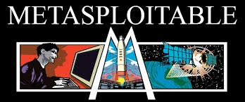
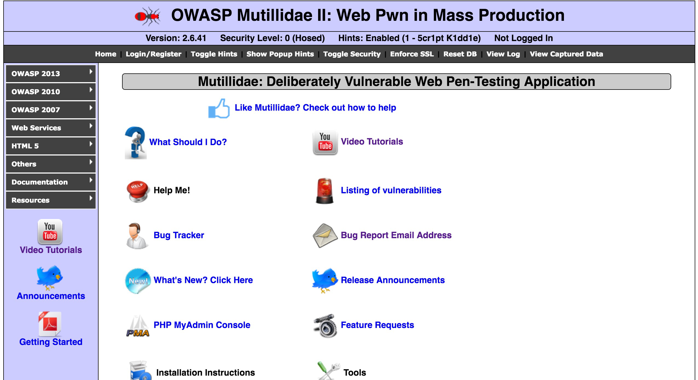
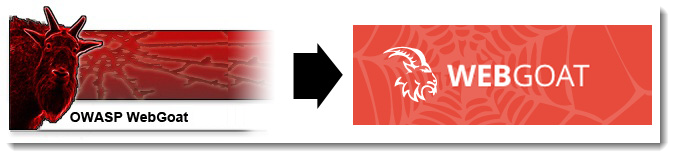
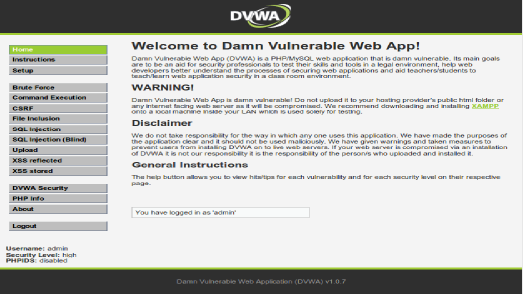
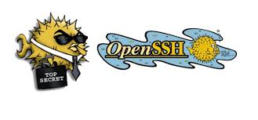
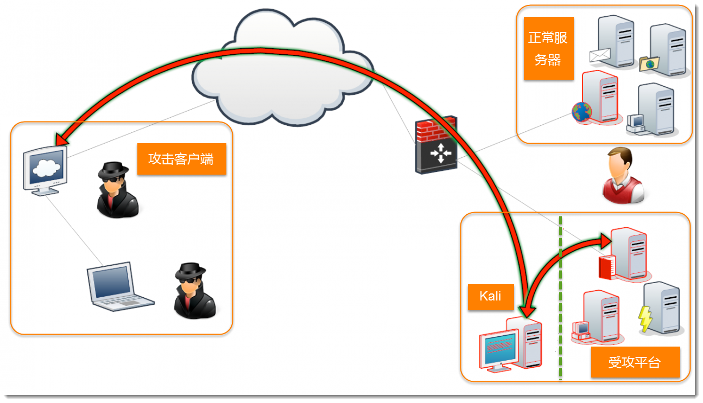
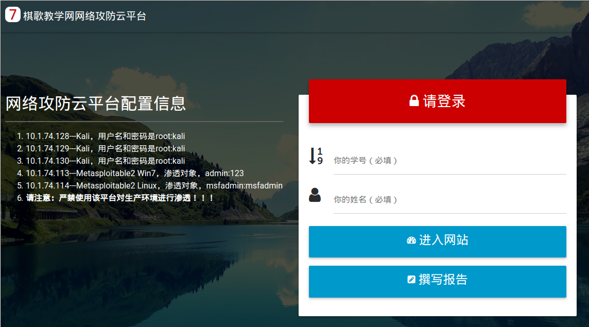
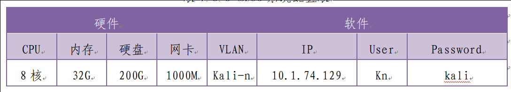
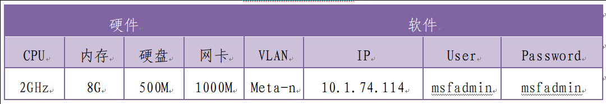
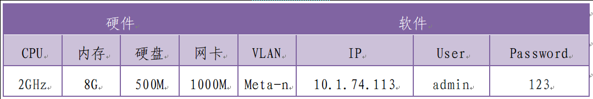

要解决什么
- 1. 为网络攻防提供实验云平台
- 2. 有详尽的实验指导文档
- 3. 随时随地使用
- 4. 无法律风险
- 5. 无其它开销
要解决什么
即：搭建一个网络攻防云平台，让对网络安全有兴趣的所有同学能随时随地、不增加开销、无法律风险地进行网络攻防方面的学习
要做些什么-攻击平台

- a. 研究Kali Linux及其渗透工具（nmap、burpsuite、httrack、macof、metasploit、hyday、SET等）
- b. 研究第三方渗透工具（Nessus、OpenVAS、Nginx、Maltego、shodan等）
- c. 研究云平台资源分配、管理、安装、配置等
要做些什么-受攻平台

一个基于Ubuntu Linux的操作系统，它存在大量未打补丁漏洞，并且开放了无数高危端口。该Linux系统用来作为攻击用的靶机。
要做些什么-受攻平台

一个开源免费的安全渗透测试PHP程序框架。安装Mutillidae在未打补丁的Linux和windows7系统上作为攻击用的靶机。
要做些什么-受攻平台
一个开源免费的通用hack训练环境，包括渗透工具和多种漏洞环境。安装dojo在未打补丁的Linux和windows7系统上，作为攻击用的靶机。
要做些什么-受攻平台

一个开源免费的基于JavaEE架构的Web应用，设计了大量的缺陷来指导用户进行攻击。安装webgoat在未打补丁的Linux和windows7系统上，作为攻击用的靶机。
要做些什么-受攻平台

一个用PHP和Mysql编写的一套用于常规Web漏洞教学和检测Web脆弱性测试程序。安装DVWA在未打补丁的Linux和windows7系统上，作为攻击用的靶机。
要做些什么-远程登录服务SSHD

要做些什么-网络拓扑结构

- A. 学生在校内任何可联网的计算机上运行ssh客户端登录攻击平台服务器即可。
- B. 为保证安全以及不干扰学校服务器的正常教学和工作，攻击和受攻平台都规划在不同的VLAN中，隔离及授权访问。
要做些什么-实验网站及报告撰写

- A. 为更好的使用以及指导学生，项目组进行了实验网站的开发与搭建并在校内校外部署。
- B. 为方便学生撰写和提交实验报告方便，我们还设计和搭建了实验报告撰写和提交网站。
完成情况-攻击平台

- A. 共构建了3个Kali平台，软硬件配置如上表。
- B. 每个平台安装了大量渗透工具，且配置了SSHD供远程登录，具有快照恢复功能。
完成情况-受攻平台

- A. 构建了1个Linux平台，未安装补丁，软硬件配置如上表。
- B. 该平台安装了Mutillidae、Dojo、WebGoat和DVWA渗透框架，具有快照恢复功能，某些框架可调节难易程度。
完成情况-受攻平台

- A. 构建了1个Windows 7平台，未安装补丁，软硬件配置如上表。
- B. 该平台安装了Dojo、WebGoat和DVWA渗透框架，具有快照恢复功能，某些框架可调节难易程度。
完成情况-其它
- A. 随时随地用：可行。只要连接我校网络
- B. 无法律风险：达到。基于校内云环境上
- c. 不增加成本：达到。无需购买其它设备
总结-概况
- A. 近2年的调研、学习、开发、测试
- B. 研究了云计算平台、虚拟机、多用户机制、恢复机制、难易等级调控等方面的技术
- c. 搭建了网络攻防云平台
- d. 解决了实验教学难题，提高了实验教学质量
为全校师生提供了一个学习和掌握网络安全技术的动手实验环境！
总结-使用
- A. 专业：计算机、通信、物联网等
- B. 学生：2015级8个班约262人，2016级4个班约129人
- c. 教师：王勇、米波、刘洋等
总结-问题
- A. 每个攻击平台同时登录约40位学生使得资源紧张
- B. 受攻平台容易崩溃
- c. 不能自主恢复受攻平台
- d. 防御方面资料有限
- e. 缺乏移动环境渗透
总结-反馈
- A. 桥梁工程精品课程网站 B. 教学评估网站
- c. 外语学院阅卷系统网站 d. 学工系统网站
- E. 教务处课表查询网站 f. 网络中心服务器
- g. 思政课程网站 h. 后勤公司水卡
- i. 远程摄像头查看与控制 j. 三门峡外语学校
致谢
- A. 感谢信息科学与工程学院提供云计算环境供系统运行！
- b. 感谢实践教学管理中心提供资金支持，使项目得以顺利开展！
- c. 感谢辛苦参与测试的教师和学生！
- d. 感谢项目组成员的付出！
项目汇报完毕
感谢各位评审专家
Thank you!